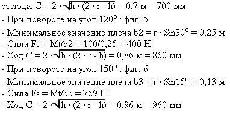

содержание
УСТРОЙСТВА ДЛЯ ИЗМЕНЕНИЯ ХАРАКТЕРИСТИК ЦИЛИНДРА.
КРИВОШИПНЫЙ МЕХАНИЗМ
Кривошипный механизм - устройство, которое позволяет преобразовать прямолинейное движение цилиндра
в периодическое угловое движение. Он содержит жесткий стержень, один конец которого имеет шарнир на вилке, для передачи движения
от цилиндра, а другой конец соединен с валом, который передает это вращательное движение. Примеры кривошипного механизма: рукоятки
и педали велосипеда, также как гаечного ключа для затяжки болтов, или для открытия и закрытия большого шарового клапана. Давайте
проанализируем последний пример, и представим управление правым гаечным ключом для маневра. Это действие показано как вращательное
движение с постоянной силой, потому что плечо (длина гаечного ключа) не подвергается никаким изменениям в течение движения вокруг
оси клапана. Представим реализацию такого же самого маневра пневматическим цилиндром, соединенным с кривошипным механизмом: точка
приложения его силы приходится на конец кривошипа, ось вращения которого совпадает с осью клапана.
на фиг. 2 цилиндр достиг специфического положение его хода, то есть момента, в котором цилиндр способен обеспечить максимальный
"момент вращения" или "крутящий момент" на валу кривошипного механизма
Как видно из рисунков, эти два плеча bmn и bmx не равны. И это потому, что они измерены между осью
вращения и перпендикуляром к линии действия осевой силы цилиндра в этих двух позициях, в соответствии с рисунками.
Значение bmx соответствует, фактически, длине кривошипа, поэтому, он не может увеличиться, продолжая
ход, его значение стремится к минимуму.
Что касается вышеупомянутого, необходимо обратить внимание на то, что крутящий момент Mt, созданный
цилиндром и передаваемый на ось вращения кривошипа, не постоянен. Он изменяется от минимума Mt = Fs x bmn, в начале цикла движения, к
максимуму Mt = Fs x bmx и возвращается к начальному значению, когда цилиндр достигает конца своего хода.
Из двух значений, которые должны быть учтены для определения размеров цилиндра, принимается минимальное
значение. Интересно отметить, что изменение угла поворота может влиять на размеры цилиндра. Предположим нам необходимо создать
кривошипный механизм, который должен находиться в трех различных угловых положениях, но с постоянным крутящим моментом; все звенья
механизма вместе с кривошипом, должны приводить во вращение звенья равного веса и при равной скорости движения.
Исходные данные для трех примеров:
Кривошип с рычагом длиной r = 0,50 м;
Требуемый крутящий момент Mt = 1000 Н · м (Ньютон на метр);
Углы вращения: 90 - 120 - 150
- Начальный угол - 90 , фиг. 4
Формула Fs = Mt/b1 указывает нам на то, что сила Fs должна быть вычислена на основе минимального значения плеча, которым является b1;
только для угла 90 , и это значение будет равно:
b1 = r · Cos45o = 0,5 · 0,707 0,35 м
Отсюда Fs = Mt/b1 285 Н
- Необходимая длина цилиндра обеспечения требуемого угла, вычисляется по формуле в соответствии с фиг. 3, на котором:
h = r · b1 = 0,15 м
